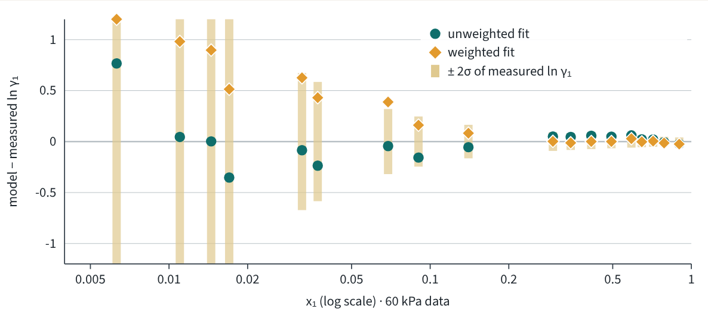
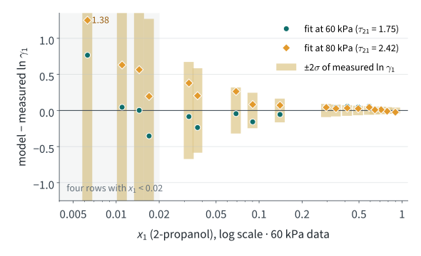

Real mixtures: activity coefficients from measured VLE
Session 2 of 7 · 180 minutes
Where this session sits
Before the midterm Equations of state Fugacity and chemical potential Solution thermodynamics
After the midterm · 7 sessions 1 · VLE and flash 2 · Experimental VLE and consistency 3 · Liquid stability and LLE 4 · Solids and adsorption 5 · Chemical equilibrium 6 · Electrochemical equilibrium 7 · Choosing a model from evidence
Session 1 used an ideal liquid. Today we take measured data for a real mixture, infer how far it is from ideal, fit a model, and test whether that model can be trusted.
Why this matters: Raoult’s law misses the azeotrope

2-Propanol + water at 60 kPa, measured by Barbieri et al. (2024).
The mixture boils up to 13 K lower than Raoult’s law predicts, and it has a minimum-boiling azeotrope near x₁ = 0.65.
A column designed with Raoult’s law would promise a pure product that simple distillation cannot make.
Data: Barbieri, De Guido and Moioli, J. Chem. Thermodyn. 198 (2024) 107342, Table 4. Lab 02 uses the same data.
From Session 1 to measured data
Session 1 The γ–φ route, solved for the phases.
y_i\Phi_iP=x_i\gamma_iP_i^{\text{sat}}
Today The same equation, solved for γ from a measurement.
\gamma_i=\frac{y_i\Phi_iP}{x_iP_i^{\text{sat}}(T)}
First half γi is a partial molar property of GE, so γ₁ and γ₂ are linked by Gibbs–Duhem.
Φi collects the vapor nonideality and the Poynting factor. Every input on the right has an uncertainty, and it passes into γ.
By the end of today you can
Where you show it
- Reduce a measured T, P, x, y state to γ₁, γ₂ and GE/RT, and state the assumptions with their size. Worked example, Activity 2
- Propagate measurement uncertainty into ln γ and say which rows constrain a model. Activity 1, Lab 02 G3
- Fit NRTL with and without weights, and compare parameters, their correlation and the checking error. Lab 02 demo, Activity 2
- Judge what a fit, a check and a consistency test can and cannot establish. Discussion, exit ticket
The 180-minute route
0–30 Essential concepts data reduction, GE, uncertainty, weights
30–40 Activity 1 which rows count?
40–60 Demo Lab 02
60–70 Break
70–140 Activity 2 · pair investigation Lab 02: three fits, then weighted fits
140–180 Discussion and exit ticket why the checks disagree
Session question When a model fits measured VLE data well, what does that prove, and what does it not? And which data decide the fit?
Before class · 15–20 min Read the note on activity coefficients. Bring one question.
After class · 30–40 min Finish the Lab 02 fits including G3, and submit the study file with your name and ID.
Studying on your own? Follow the same order. Turn on narration or captions at the bottom left, and pause at each activity slide.
From one measured state to γ
\gamma_i=\frac{y_i\,\Phi_i\,P}{x_i\,P_i^{\text{sat}}(T)}
Psat at the measured T of each row, from the course Antoine sets:
\log_{10}\frac{P^{\text{sat}}}{\text{bar}}=A-\frac{B}{T+C}
At a pure endpoint the absent component gives 0/0, so those rows carry no γ.
Assumptions, with their size here
| Assumption | Effect on ln γ |
|---|---|
| Φi = 1, for B = −1000 cm³ mol⁻¹ | −0.011 (water), −0.0015 (2-propanol) |
| Antoine set 3 % low | +0.030, same sign in every row |
| Pure-liquid standard state | γi → 1 as xi → 1 |
Small next to scatter, but systematic: it does not average out.
Worked example: row 7 at 60 kPa
1 · Read the row T = 341.25 K, P = 60 kPa
x₁ = 0.4943, y₁ = 0.569
2 · Psat at 341.25 K 2-propanol: 55.853 kPa
water: 28.703 kPa
3 · γ₁ (0.569 × 60) / (0.4943 × 55.853)
= 1.237
4 · γ₂ (0.431 × 60) / (0.5057 × 28.703)
= 1.782
Both exceed 1: each component escapes to the vapor more readily than in an ideal solution. For fitting we use ln γ₁ = 0.212 and ln γ₂ = 0.578.
Antoine constants, log₁₀(P/bar) = A − B/(T/K + C), NIST WebBook: 2-propanol 4.8610, 1357.427, −75.814 (Biddiscombe et al. 1963); water 5.0768, 1659.793, −45.854 (Bridgeman and Aldrich 1964); common range 334–362.41 K. All course constants: Session 2 note, section 6.
What γ > 1 tells you

Positive deviation ln γ > 0 for both components at every composition. Unlike pairs (2-propanol with water) attract less than like pairs.
Largest when dilute ln γ₁ reaches about 2 as x₁ → 0, so γ₁ ≈ 8: a little 2-propanol in water is very volatile.
Azeotrope Where yi = xi:
\frac{\gamma_1}{\gamma_2}=\frac{P_2^{\text{sat}}}{P_1^{\text{sat}}}
γ₁ and γ₂ are not independent
g\equiv\frac{G^E}{RT}=\sum_i x_i\ln\gamma_i\qquad \ln\gamma_i=\left(\frac{\partial (ng)}{\partial n_i}\right)_{T,P,n_j}
At constant T and P, Gibbs–Duhem:
x_1\,\mathrm{d}\ln\gamma_1+x_2\,\mathrm{d}\ln\gamma_2=0
Row 7: g = 0.4943(0.212) + 0.5057(0.578) = 0.397.
So fit a model for g, not two separate curves for ln γ₁ and ln γ₂. Any g(x) gives a consistent pair by construction.
Measured T, P, x and y over-determine the problem. That redundancy is what a consistency test uses, and it is also why a bad y can be detected.
From points to a model: NRTL
\ln\gamma_1=x_2^2\left[\tau_{21}\Big(\frac{G_{21}}{x_1+x_2G_{21}}\Big)^2+\frac{\tau_{12}G_{12}}{(x_2+x_1G_{12})^2}\right]
G_{ij}=\exp(-\alpha\,\tau_{ij})
ln γ₂ follows by swapping 1 and 2. In general τij = aij + bij/T. With α = 0.47 (from the article) and constant τ, two parameters are fitted.
What “fit” means here
Choose τ₁₂, τ₂₁ to minimize the root-mean-square difference between model and measured ln γ:
\text{RMSE}=\sqrt{\frac{\sum_j (r_{1,j}^2+r_{2,j}^2)}{2N}}
r = model ln γ − measured ln γ; N usable pairs.
Can a test tell us the data are good?
Gibbs–Duhem links the two activity coefficients at constant T and P:
x_1\,d\ln\gamma_1+x_2\,d\ln\gamma_2=0
For isothermal data this gives the area test:
\int_0^1\ln\frac{\gamma_1}{\gamma_2}\,dx_1=0
Isobaric data add an HE term. The article reports this test passed (−4.83 and −0.65, limit 10) without it.
Lab 03 on the measured 60 kPa data
Area test: not applicable, the path is isobaric.
Herington: not assessed, no endpoint estimates.
Local test: not assessed, HE is not available.
“Not assessed” is not “inconsistent”. It means the data do not carry what the test needs.
How well is ln γ₁ known in each row?
Propagate the standard uncertainties u = U/k (article averages, k = 2):
\sigma_{\ln\gamma_1}^2\approx\Big(\frac{u_x}{x_1}\Big)^2+\Big(\frac{u_y}{y_1}\Big)^2+\Big(\frac{u_P}{P}\Big)^2+\Big(\frac{\mathrm{d}\ln P_1^{\text{sat}}}{\mathrm{d}T}u_T\Big)^2
At 60 kPa: ux = 0.0107, uy = 0.0139, uP = 0.25 kPa, uT = 0.037 K.
σ of measured ln γ₁ · 60 kPa
| x₁ | y₁ | measured ln γ₁ | σ |
|---|---|---|---|
| 0.4943 | 0.569 | 0.212 | 0.033 |
| 0.1401 | 0.4769 | 1.223 | 0.082 |
| 0.0371 | 0.3473 | 2.004 | 0.29 |
| 0.0063 | 0.0418 | 1.238 | 1.74 |
The dilute rows hardly constrain ln γ₁, yet an unweighted RMSE counts them fully.
Fit at one pressure, check at another
The data come at two pressures: 60 kPa (18 usable pairs) and 80 kPa (17 usable pairs).
- Fit τ₁₂, τ₂₁ to one pressure only.
- Keep those parameters fixed.
- Check the model against the other pressure, which it has never seen.
The checking error tells you how far you can trust the model away from its own data.
A fitting error alone can always be made small by adding parameters.
A checking error on held-out data is the honest test of a model.
The 80 kPa set loses its most dilute row: at 362.78 K it is outside the 2-propanol Antoine range.
The objective is part of the model
Unweighted: minimize \sum r^2. Weighted: minimize \sum (r/\sigma)^2.
RMS(r/σ) ≈ 1 means the misfit matches the stated uncertainty.
The ± values are from the linearized covariance at the minimum. The unweighted fit at 60 kPa has τ₁₂ and τ₂₁ correlated at −0.86: many pairs fit almost equally well.
Training set 60 kPa · α = 0.47
| τ₁₂ | τ₂₁ | RMSE 60 / 80 | RMS(r/σ) 60 / 80 | |
|---|---|---|---|---|
| unweighted | 0.362 ± 0.14 | 1.75 ± 0.15 | 0.168 / 0.164 | 1.94 / 0.77 |
| weighted | 0.337 ± 0.04 | 2.85 ± 0.15 | 0.407 / 0.097 | 1.16 / 0.93 |
Changing only the weights moves τ₂₁ by 1.1, about seven of its standard deviations. The weighted parameters also give negative liquid curvature near x₁ = 0.15: a liquid split that does not exist.
Can isobaric data give τ(T)?
On an isobar, T is set by x: here 340.9–358.7 K at 60 kPa. Composition and temperature effects are confounded.
Fitting τij = aij + bij/T to both pressures (4 parameters):
- RMSE falls only from 0.155 to 0.146
- b₁₂ = −2250 K, b₂₁ = 5950 K: large, opposite, compensating
The article’s own T-dependent NRTL parameters (its Table 7) give 0.26 at 60 kPa and 0.054 at 80 kPa in this ln γ metric.
Different objectives and data give different parameters. To identify τ(T), use data that vary T at fixed x: isotherms at several T, or excess enthalpy HE, the temperature derivative of GE/T.
Which rows decide the fit?
Activity 1 · 10 minutes · alone, then with a partner
At 60 kPa, ux = 0.0107 and uy = 0.0139. Estimate σ of ln γ₁ from the x and y terms for row 7 (x₁ = 0.4943, y₁ = 0.569) and for the most dilute row (x₁ = 0.0063, y₁ = 0.0418).
Then predict: in an unweighted fit, which of the two rows has more influence on τ₂₁? Is that what you want? Compare with your partner.
On your own: pause here, write your answer, then go to the next slide.
Activity 1: check your estimate
Row 7: \sqrt{(0.0107/0.4943)^2+(0.0139/0.569)^2} = 0.033
Dilute row: \sqrt{(0.0107/0.0063)^2+(0.0139/0.0418)^2} = 1.73
The dilute row is 50 times less certain. In an unweighted fit it still counts as much as row 7, and its residual (0.77 for the 60 kPa fit) dominates the sum.
Four 60 kPa rows have x₁ < 0.02. They supply 70 % of the unweighted sum of squares for the 60 kPa fit, and 88 % for the 80 kPa fit checked at 60 kPa.
A weighted fit lets each row count in proportion to what was measured.
Demonstration · Lab 02
- Read row 7 at 60 kPa. Check γ₁ = 1.237, γ₂ = 1.782.
- Fit 60 kPa, check 80 kPa: 0.168 and 0.164.
- Graduate view, G3: fit 60 kPa unweighted and weighted. Compare τ₂₁ and RMS(r/σ).
- Set the minimum x₁ to 0.05 and refit. What changes?

Lab 02 G3 should report · training 60 kPa Unweighted τ₂₁ = 1.7524 ± 0.150 · weighted τ₂₁ = 2.8484 ± 0.152 · RMS(r/σ) at 60 kPa: 1.94 and 1.16 · min. liquid curvature 0.238 and −0.030
Four common mistakes
Psat at the wrong temperature. Each row has its own measured T. Evaluate both Psat there, and stay inside the Antoine range.
Treating every residual as equally certain. σ of ln γ₁ ranges from 0.03 to 1.7 in the same data set.
Reporting τ without its uncertainty. Two parameters correlated at −0.86 are not two independent findings.
Reading the isothermal area test on isobaric data. Without the HE term, a pass or a fail says little.
Break · 10 minutes
Next Activity 2: a pair investigation in Lab 02, 70 minutes.
Before you leave your seat, check that Lab 02 opens on your device.
Activity 2 · why do the checks disagree?
Activity 2 · 70 minutes · in pairs: one drives Lab 02, one checks by hand, then swap
15 min · by hand Pick an interior row other than row 7. Calculate Psat, γ₁, γ₂, g and σ of ln γ₁. Check with the lab.
20 min · three fits Fit 60 → check 80. Fit 80 → check 60. Fit both. Save each as a case.
20 min · G3 weights Repeat 60 and 80 in G3, unweighted and weighted, then with minimum x₁ = 0.02. Record τ, sd, RMS(r/σ) and the liquid curvature.
15 min · explain Two sentences with numbers: why does “fit 80” check worse at 60 kPa than “fit 60” checks at 80? Download the study file with names and IDs.
On your own: do both roles yourself. Pause the slides, work in Lab 02, then continue.
Activity 2 · what to hand in
- Lab 02 study file with three saved cases, G3 and G4, your name and student ID.
- One hand calculation of γ₁, γ₂, g and σ.
- Two sentences that answer the activity question with numbers.
Graduate extension Fit with minimum x₁ = 0.05 at both pressures. Do the two parameter sets agree within their standard deviations? What would you measure next?
Check your results · RMSE in ln γ · unweighted
| Fit | τ₁₂ | τ₂₁ | fit | check | check, x₁ ≥ 0.02 |
|---|---|---|---|---|---|
| 60 → 80 | 0.362 | 1.752 | 0.168 | 0.164 | 0.148 |
| 80 → 60 | 0.354 | 2.417 | 0.043 | 0.291 | 0.116 |
| both | 0.364 | 1.937 | 0.155 | — | — |
G3, weighted: 60 kPa τ₂₁ = 2.85, RMS(r/σ) 1.16 / 0.93, min. curvature −0.030 · 80 kPa τ₂₁ = 2.08, RMS(r/σ) 1.59 / 0.42, curvature 0.139 (RMS at 60 / 80 kPa)
Discussion: why the checks disagree

Discuss in pairs, then with the class
- Without the four rows below x₁ = 0.02, the 80 kPa fit checks at 0.116 on 60 kPa data. What was the 0.291 measuring?
- The weighted 60 kPa fit is closer to the stated uncertainty, yet predicts that a fully miscible liquid splits. Is it the better model?
- Which single new measurement would discriminate τ₂₁ = 1.75 from 2.42?
Summary
Data reduction γi = yiΦiP / (xiPisat); assumptions are small but systematic.
Model Fit GE (NRTL), not two curves. The objective and weights are part of the model.
Trust Check on unseen data, normalized by what was measured; report τ with its uncertainty.
Session question: a small fit error shows that the model follows the points it was given. The 0.291 checking error came mostly from four dilute rows whose ln γ₁ is known only to ±0.6–1.7. Weighting moves τ₂₁ from 1.75 to 2.85 with the same data, and the weighted set predicts a liquid split that does not exist.
Next session When does one liquid split into two? Phase stability and LLE (Labs 04 and 05), starting from that weighted fit.
Exit ticket · 5 minutes
Exit ticket and feedback · alone · 5 minutes · anonymous
Weighting the residuals moved τ₂₁ from 1.75 to 2.85 with the same data. What does this say about the parameters, and what would you report with them?
Scan the code or open the link. The same form asks three short questions about today: pace, confidence and whether the lab worked.
No name or student ID is recorded. Wait for “Response received.”

After class
Hand in · this week Your Lab 02 study file with the three fits, G3 and G4, name and student ID.
Prepare · Session 3 Read the note on Gibbs energy of mixing and phase stability. About 20 minutes.
Optional · graduate Run Lab 03 on the measured 60 kPa data and explain each “not assessed” result in the study file.